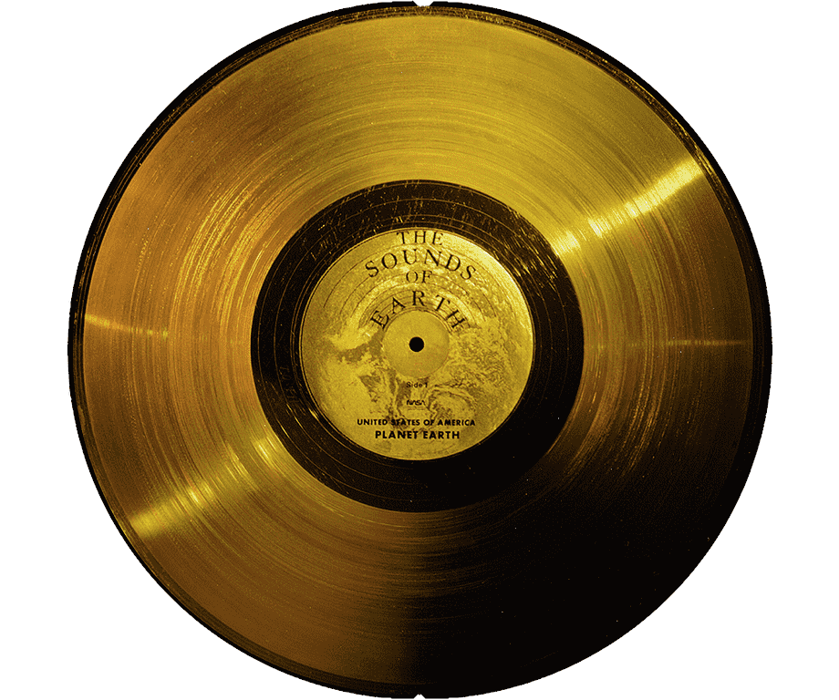

Loading Audio File...
This might take a while
Left Channel
Right Channel
The Golden Record is a phonograph record that was included on the Voyager 1
and Voyager 2 spacecraft, which were launched in 1977. The record contains
sounds and images intended to provide information about Earth to any extraterrestrial
intelligence that might come across it.
Below are the live decodings of the 116 images that are present on the record.
Loading Audio File...
This might take a while
The Golden Record consists of 116 images that are encoded through an audio recording which consists of two channels: left and right.
We know, from the cover, that each image is made up of 520 'scan lines' which each last roughly 8ms. Therefore to produce one cohesive image, we must stack 520 of these 'scan lines' next to each other.
When looking at each 8ms 'scan line' through audacity, a free audio editing software, we can see that the audio is simply made up of many 'dots' that are represented through a 32bit floating point number.
These numbers are then converted into pixels, which should (with a lot of tinkering) produce an image.
The MP3 Recording can be found here